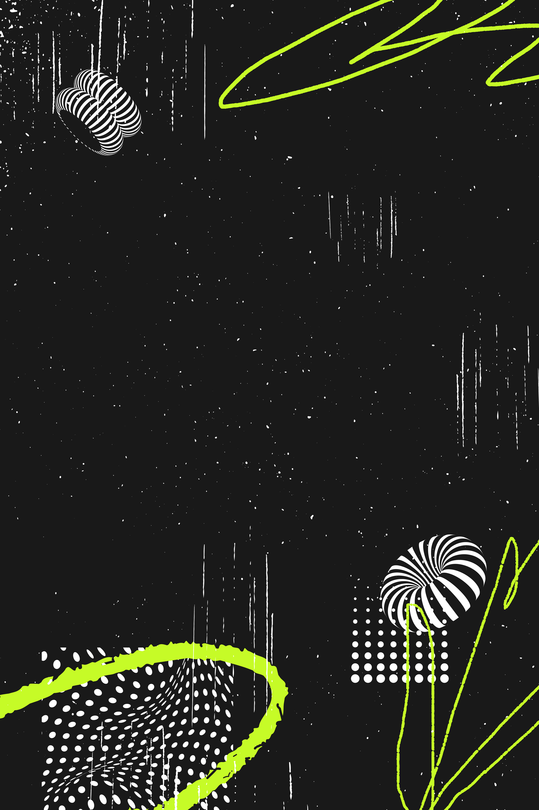

SUBCULT
SYSTEM
THE LOGOTYPE IS MINIMAL AND STRUCTURED.
IT REFLECTS ORDER, CONTROL, AND
THE INVISIBLE FRAMEWORK OF SOCIETY.
THE NORM IS THE SYSTEM
THE LOGOTYPE IS MINIMAL AND STRUCTURED.
IT REFLECTS ORDER, CONTROL, AND
THE INVISIBLE FRAMEWORK OF SOCIETY.
THE SIGIL REPRESENTS THE HIDDEN LAYER.
A MARK FOR THOSE WHO EXIST OUTSIDE
THE NORM AND BUILD ALTERNATE REALITIES.
SUBCULT SYSTEM IS NOT A BRAND.
IT IS A RESPONSE TO STRUCTURE.
WE OPERATE BETWEEN ORDER AND CHAOS.
BETWEEN VISIBILITY AND ERASURE.
EVERYTHING IS CODED. NOTHING IS RANDOM.


